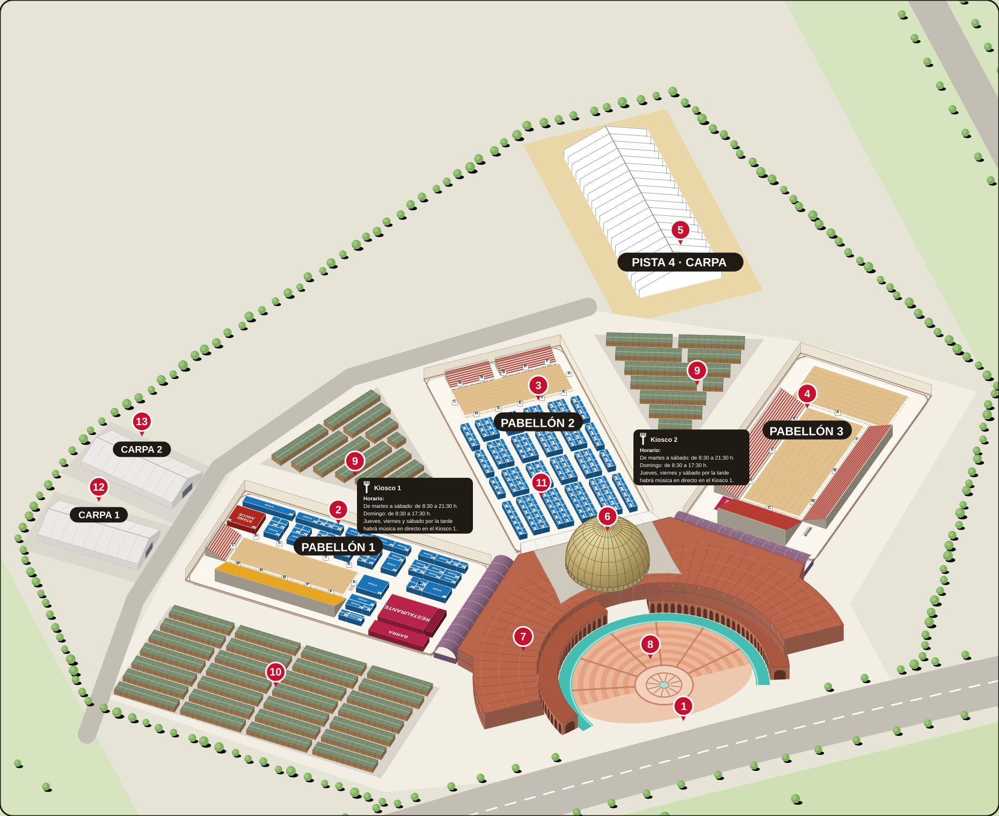

PROGRAMA OFICIAL
Sábado 21 · FIBES
Recinto 10:00–21:00 · Espectáculo 13:00 (Pista 3, aprox. 1 h 45). El show es el mismo todos los días y el sábado incluye pase de la Real Escuela Andaluza del Arte Ecuestre.
Programa oficial ↗Info SICAB ↗Cuatro días en familia, una ciudad para descubrir y un sábado entero entre caballos de Pura Raza Española. Rutas organizadas desde Oasis Suites Fernando IV, en Los Remedios.
Selecciona el día para ver el plan completo y marcar cada parada. Los horarios son orientativos y se pueden adaptar al ritmo del pequeño. Tus marcas y notas se guardan en este navegador.
Filtra por día y pulsa los puntos para abrir la ubicación. El mapa necesita internet; los enlaces a Google Maps sirven para navegar a pie o en transporte público.
Más opciones que solo picoteo: menús del día, guisos y cocina sevillana, junto a bares de tapas para las noches. Usa los filtros para elegir según lo que os apetezca y la zona.
Día completo en FIBES con el pequeño. El espectáculo de las 13:00 (Pista 3) es el ancla del día; el resto se organiza para ver lo mejor de SICAB sin agotar a un niño de 2,5 años.
Recinto 10:00–21:00 · Espectáculo 13:00 (Pista 3, aprox. 1 h 45). El show es el mismo todos los días y el sábado incluye pase de la Real Escuela Andaluza del Arte Ecuestre.
Programa oficial ↗Info SICAB ↗Recinto + espectáculo de las 13:00. Los niños a partir de 2 años pagan entrada al espectáculo; hasta 12 años entran gratis al recinto con un adulto (1 niño por adulto).
sicabentradas.com ↗Ver entradas en la guía ↗Taxi desde Los Remedios es lo más cómodo con niño. Alternativa barata: línea TB1 de TUSSAM desde Plaza del Duque, unos 25 min hasta la parada junto al recinto.
Maps a FIBES ↗TUSSAM ↗El plano oficial de FIBES y las entradas ya adjuntadas. En iOS Safari el PDF puede no verse dentro de la página; usa el botón de abrir.
Pellizca o desplázate para ver pistas y cuadras. Los concursos están en las pistas 1–3; la pista 4 es una carpa junto al pabellón 2. Los boxes de caballos están junto a los pabellones 1 y 2; las yeguas, en la zona suroeste.

Fuente: plano interactivo oficial de SICAB. Pista 1 = pista central del Pabellón 1 · Pista 2 = Pabellón 2 · Pista 3 = Pabellón 3 · Pista 4 = carpa junto al Pabellón 2.
Enlaces directos al plano oficial con la zona enfocada.
Otras ganaderías destacadas: Yeguada de la Cartuja · stand 10, Yeguada Paola Arcas · stand 37, Yeguada Batán · stand 24, Ganadería Mater Christi · stand 32 (todas en Pabellón 1).
Importante: esta guía contiene tus entradas. No compartas el enlace; al pulsar Compartir, la app pedirá confirmación.
PDF adjunto en la guía. Ábrelo y muestra el QR en la puerta.
Abrir entrada general ↗PDF adjunto en la guía. Sube el brillo antes de mostrar el QR.
Abrir entrada espectáculo ↗Si iOS no muestra el PDF dentro de la página, usa el botón de abrir: Safari lo abre con su visor nativo. También puedes tomar captura y guardarla en Fotos como respaldo.
Gastos variables para adultos. Sin vuelos, hotel, entradas SICAB, taxis ni extras. Ajusta los comensales.
Añade el billete infantil si corresponde, metro, transporte a FIBES, comida del niño y otros gastos. Las entradas de SICAB ya están pagadas (referencia aprox. 98,50 € para 2 adultos + niño): no se suman al gasto variable.
El EA cuesta 6 € por trayecto y adulto. Baja en Prado de San Sebastián, enlaza con la línea 1 del metro hacia Ciudad Expo y sal en Plaza de Cuba. El metro se paga aparte. Si hay cansancio o maletas grandes, valora taxi para el último tramo.
Reserva Alcázar y Catedral por sus canales oficiales. Si las visitas interiores se alargan, elimina la última parada y disfruta del centro sin prisas.
FIBES está lejos del casco antiguo. Llevad mochila ligera, agua, ropa por capas y protección auditiva infantil si el espectáculo es ruidoso. Las entradas ya están compradas (recinto + show 13:00); los PDF están en la sección Plano y entradas. Alternativa de transporte: línea TB1 de TUSSAM desde Plaza del Duque.
Vuelo a las 17:00. La recomendación es llegar al aeropuerto hacia las 14:15. Dejad las maletas en el alojamiento solo si os lo confirman; en caso contrario, reducid la visita a Triana.
Las calles del centro tienen adoquines: carrito ligero o mochila portabebés. Reservad tiempo para comer temprano, descansar y cambiar de planes si hace falta.
En Sevilla puede refrescar por la noche y llover. Llevad chaqueta ligera e impermeable. Consultad la previsión pocos días antes del viaje.